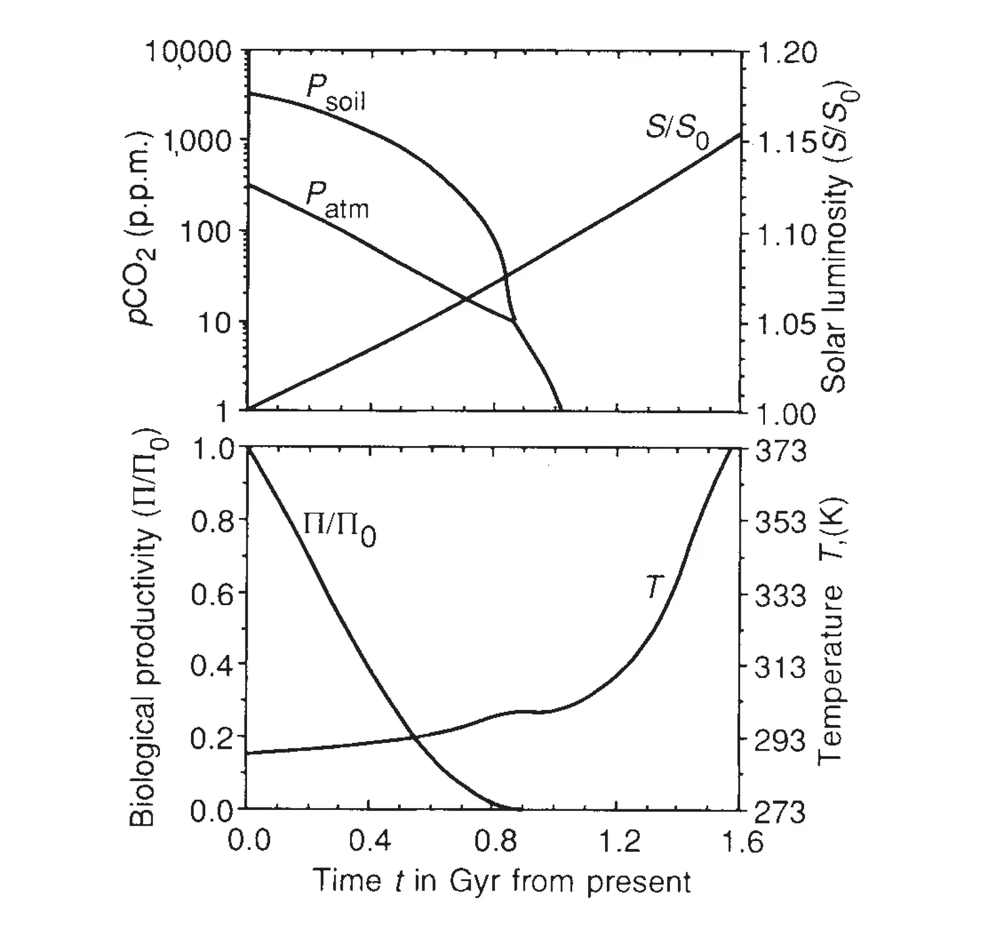

The life span of the biosphere revisited
Key finding. Because C4 photosynthesis can persist at atmospheric CO2 below 10 parts per million, a C4-plant-based biosphere could survive at least another 0.9 to 1.5 billion years — depending on whether carbon dioxide or temperature becomes the limiting factor — rather than the roughly 100 million years implied by a C3 limit.

What question did this research address?
As the Sun brightens, silicate rocks weather more readily, drawing carbon dioxide out of the atmosphere. That feedback stabilises Earth's temperature, but it also means carbon dioxide falls over geological time — eventually below what plants need.
Lovelock and Whitfield had put that limit about 100 million years away, when carbon dioxide drops below the 150 parts per million required for C3 photosynthesis. This paper re-examined the calculation with a better model.
What did we find?
Three improvements drive the difference: a more accurate treatment of the greenhouse effect of carbon dioxide, a biologically mediated weathering parameterization, and the recognition that C4 photosynthesis operates far below the C3 threshold.
Whether the limit is 0.9 or 1.5 billion years depends on which constraint binds first — carbon dioxide starvation or rising temperature.
Within about a further billion years beyond that, Earth may lose its water to space through photodissociation and hydrogen escape, following the path of Venus. That loss would end the biosphere unambiguously.
The model is constructed to give a *minimum* estimate: it maximises both the greenhouse effect and stratospheric water loss, and takes conservative temperature and carbon requirements for the biosphere.
Why does it matter?
It changes the answer to how long Earth remains habitable by roughly an order of magnitude, and does so by attending to plant biochemistry rather than to planetary physics.
The bearing on astrobiology is direct, as the paper notes: a habitable period measured in billions rather than hundreds of millions of years changes the odds of finding biologically active planets elsewhere.
It is also an early demonstration that the carbonate-silicate thermostat has a termination condition. The feedback that keeps Earth temperate is the same one that will eventually starve its biosphere of carbon.
Citation, data, and code
Ken Caldeira and James F. Kasting (1992). The life span of the biosphere revisited. Nature 360, 721-723.
Related
- How long does a carbon dioxide emission go on warming the planet?
- What does the deep-time record reveal about how the Earth system behaves?
- The role of terrestrial plants in limiting atmospheric CO2 decline over the past 24 million years (Pagani et al., 2009)
- Carbonate deposition, climate stability, and Neoproterozoic ice ages (Ridgwell et al., 2003)
- Enhanced Cenozoic chemical weathering and the subduction of pelagic carbonate (Caldeira, 1992)